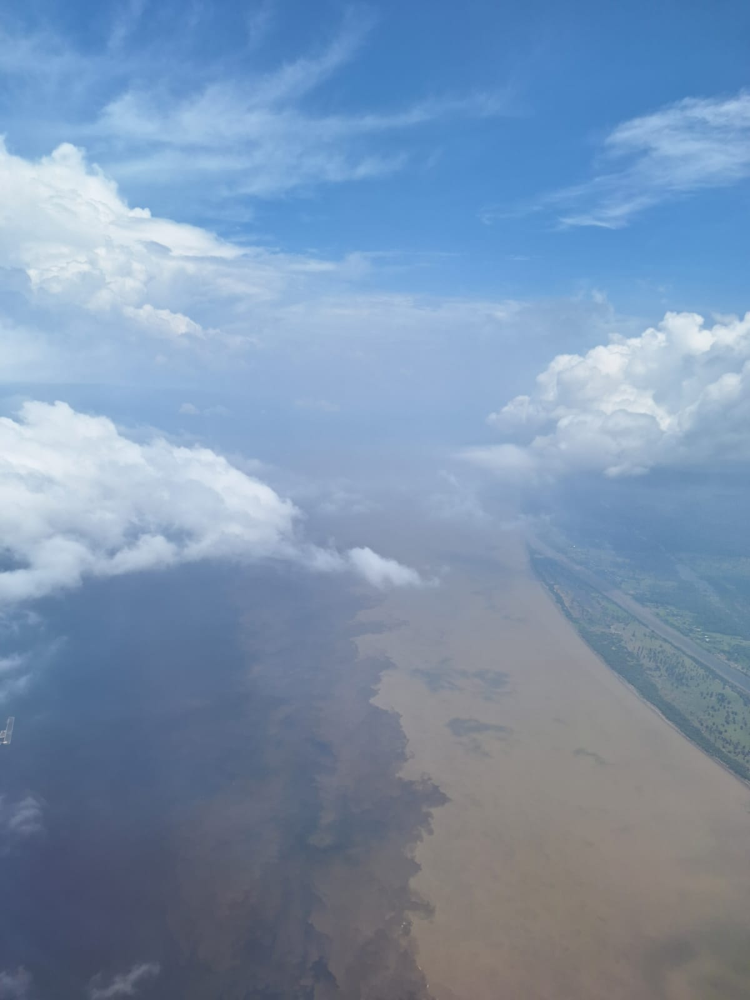
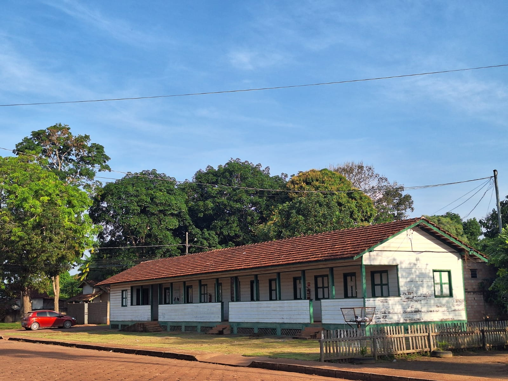
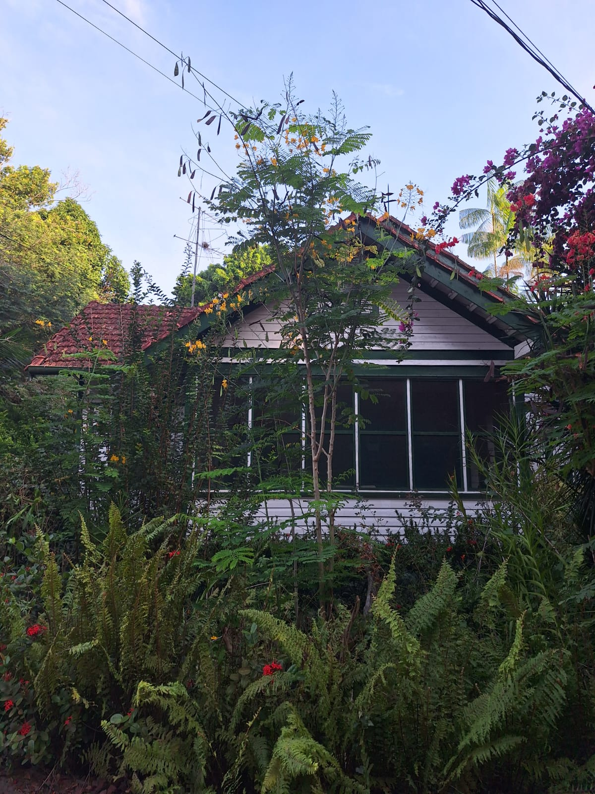

Maravilhosa viagem para Amazônia em outubro 2025
Manaus
Começamos a nossa aventura embarcando em São Paulo com destino a Manaus
A nossa chegada foi presenteada com a vista aérea do encontro das águas
Manaus é uma grande cidade típica do Brasil. A parte central, onde estão os edifícios históricos está bem degradada. Caminhar pelo centro envolve enfrentar o calor úmido, ruas bastante sujas e o barulho do comércio popular. Isso para não falar dos cheiros, sempre muito presentes. E nem sempre muito agradáveis.
É muito interessante a história da época da borracha e todas as frutas, peixes e farinhas que fazem da cozinha amazônica uma delícia!! Falando nisso, depois vamos jantar no Banzeiro, outro dos melhores de Manaus e cujo chef é de Maravilha!!
Chegamos em Manaus por volta das 14h. E após deixarmos as malas em nosso B&B, fomos almoçar no Tambaqui de Banda
Após o almoço, descemos em direção ao rio, passamos pelo Palacete Provincial, que ja foi sede da polícia e agora abriga varios museus.
Já na beira do rio esta o Mercado Municipal, cuja estrutura em ferro veio da França, projetada por ninguém menos que Gustave Eiffel.

Viagem de barco até Alter do Chão
Estamos embarcados no ferryboat Golfinho do Norte, que vai partir às 11h (aqui estamos 1 hora antes de Brasília).
Belterra
O passeio em Belterra foi muito interessante.
Essa foi a segunda cidade fundada pela Ford na Amazônia, depois que o experimento em Fordlandia fez água por causa de um fungo que acabou com o seringal.
A produção em Belterra nunca foi tão eficiente quanto a do sudeste da Ásia, que passou a produzir látex no fim do século XIX, comeco do século XX com base em mudas brasileiras de seringueiras que foram contrabandeadas para lá por um inglês. A questão é que desde o comeco da producao na Ásia os ingleses/holandeses/franceses fizeram melhoramento genetico nas plantas e, assim, conseguiram melhorar a producao. Mas, no período da segunda Guerra mundial, a produção asiática acabou represada pela guerra no Pacífico e assim a borracha brasileira voltou a ganhar espaço. Mas ai a guerra terminou e os asiáticos tinham um estoque enorme para desovar no mercado, o preço caiu e a coisa aqui em Belterra afundou.
Justamente, a Ford decidiu investir na Amazônia porque estava achando muito altos os preços da borracha asiática antes da segunda guerra.

